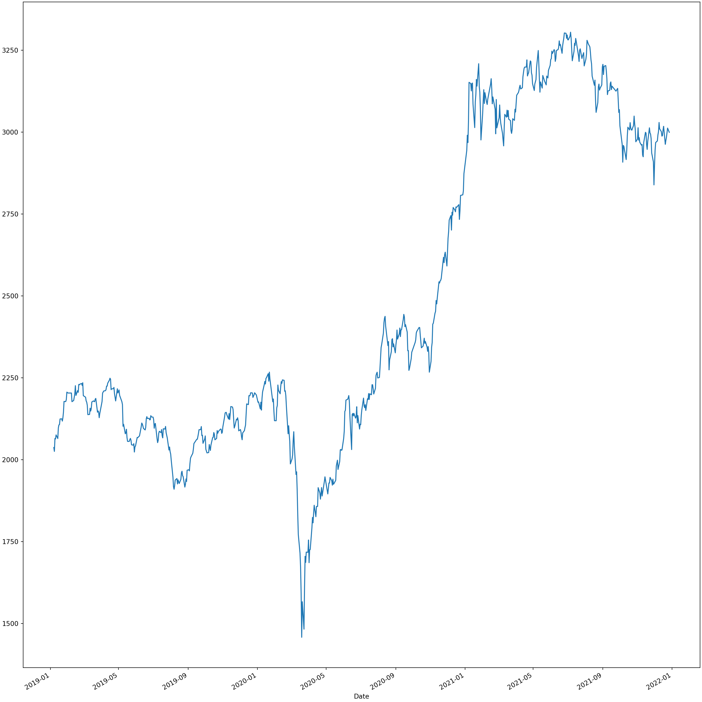

4 추세와 단위근
4.1 시작에 앞서 python을 사용하기 위한 설정
다음은 python을 불러오기 위한 것입니다. 본인의 파이썬 경로를 넣으실 수도 있겠지만, 편의를 위하여 포함되어 있는 파일을 사용하시길 추천드립니다.
import pandas as pd
import arch
import numpy as np
import statsmodels.api as sm
import yfinance as yf
import matplotlib.pyplot as plt4.2 추세모형
추세란 보통 어떤 시계열이 단기보다는 장기적으로 움직이는 패턴을 말한다.
시계열 분석에서 추세는 일정한 모형을 전제로 하고 정의한다. 예를 들어 ARMA 유형의 시계열모형을 전제로 추세를 정의할 수도 있고, 성장곡선과 같은 비선형모형을 전제로 할 수도 있다. 시계열모형에서 어떻게 추세를 모형화하는가는 장기 out-of-sample 예측에 있어서 지배적인 결과를 초래하므로 실제로 데이터의 모형을 설정하기 전에 추세의 특성을 정확히 파악할 필요가 있다. 여기에서는 결정적 추세모형(deterministic trend model; DT)와 확률추세모형(stochastic trend model; ST)을 설명하기로 한다.
예를 들어, 시계열 \(x_t\)가 \(\alpha + \beta t\)의 선형시간추세를 가지고 있을 때 이 추세로부터의 편차가 1-차 자기회귀모형을 따르는 경우를 생각해 보자.
\[ x_t-\alpha - \beta t = \phi(x_{t-1}-\alpha-\beta(t-1))+a_t, \quad a_t \sim N(0,\sigma^2_\alpha) \]
단, t는 차분이 1인 시간 인덱스를 나타낸다. (1,2,3 …) 위 식은 다음과 같이 표현할 수 있다.
\[ x_t = [(1-\phi)\alpha + \phi \beta]+(1-\phi)\beta t + \phi x_{t-1} + a_t \\ = \alpha^* + \beta^* t + \phi x_{t-1} + a_t \]
\(z_t = x_t - \alpha - \beta t\)라고 정의했을 때 식을 다음과 같이 변경할 수 있을 것이다.
\[ z_t = \phi^t z_0 + \sum^{t}_{i-1}\phi^{t-i}a_i \]
\(z_0\)은 임의의 초기값이다. 만일 \(|\phi|<1\)이면 초기값 \(z_0\)의 영향은 점차 감소할 것이며 최근의 충격은 과거의 충격보다 \(z_t\)에 더 큰 영향을 미칠 것이다. 그러나 특정시점에서의 충격은 장기적으로 사라지게 될 것이다. 즉, DT모형에서는 \(x_t\)가 이의 평균 \(\alpha + \beta t\)로 회귀하는 특성을 갖게 된다.
시간추세모형은 물론 시간에 대해서 선형일 필요는 없다. 예를 들어, 성장곡선모형에 많이 사용되는 Gompertz 성장곡선모형은 다음과 같은 비선형 추세를 갖는다.
\[ x_t = \alpha exp ^{-\beta exp(-\gamma t)}+ a_t, \quad a_t \sim N(0,\sigma^2_a) \]
만약 \(\phi = 1\)이면 다음과 같은 확률보행과정(random walk process)이 된다.
\[ x_t = \beta + x_{t-1} + a_t \]
이 경우 \(z_t = z_0 + \sum^{t}_{i=1}a_i\)가 되며 \(x_t\)는 다음과 같이 표현할 수 있다.
\[ x_t = x_0 + \beta t + \sum^t_{i=1} a_i \]
식에서 \(\sum^t_{i=1} a_i\) 항을 확률 추세(stochastic trend)라고 하고 이 때의 \(x_t\)를 ST시계열이라고 한다. 확률추세항을 보면 \(x_t\)를 왜 적분과정이라고 부르는지 알 수 있다. 확률보행과정은 한 번 차분하면 안정적이기 때문에 1-차 적분과정이라고 부르고 기호로는 보통 I(1)로 표시한다.
ST모형에서는 현재뿐만 아니라 아주 오래 전의 충격도 동일하게 \(x_t\)에 영원한 영향을 미친다. 물론 시간추세항 \(\beta t\)가 포함되어 있으나 \(\beta\)의 크기가 \(\sigma^2_\alpha\) 보다 상대적으로 작으면 \(x_t\)의 움직임은 주로 확률추세의 의해 좌우되며 시간추세에서 벗어난 경우 그 상태에서 상당기간 머무는 특성이 있다. 만일 \(\beta\)가 0이면 \(x_t\)는 어떠한 평균우로도 회귀하지 않을 수 있다. DT모형의 평균회귀성향과 ST모형의 표류성향은 장기예측에 있어서 후자의 정확도가 훨씬 떨어질 것임을 시사하고 있다.
우리가 보통 분석하고 예측하는 금융 및 경제 시계열들은 대부분 I(1) 과정이다.
확률 추세를 가지고 있는 임의의 시계열이 있다고 할 때 두드러지는 특성 중 하나는 이의 AR 표현식이 적어도 하나의 (1-L)항을 갖는다는 것이다. 즉,
\[ \phi_p(L) = (1-\phi_1 L - \cdots - \phi_p L^P) \\ = (1-\alpha_1 L - \cdots - \alpha_{p-1}L^{p-1})(1-L) \\ = \phi_{p-1}(L)(1-L) \]
만약 위의 AR(p)모형이 I(1)과정이라면
\[ \phi_p(1) = 1-\phi_1 - \cdots - \phi_p = 0 \]
이 성립한다.
이를 바탕으로 \(x_t\)가 안정적 AR(2)과정인지 아니면 확률 추세를 갖는 I(1)과정인지 검정할 수 있는 방법이 있음을 알 수 있다. 즉, \(\phi_1 + \phi_2 < 1\) 또는 \(\phi_1 + \phi_2 = 1\)를 검정하면 될 것이다. 그러나 적분된 자료를 분석하는 경우 문제는 유한한 표본을 가지고 \(\phi\)를 추정해야 하며 이 때 적용하는 통계적 추론 절차는 전통적인 t-검정과는 차이가 있다는 점이다. 이러한 검정방법을 다루는 분야를 보통 단위근 검정(unit root test)이라고 부른다.
4.3 Dickey-Fuller 단위근 검정
시계열에 단위근이 있는지를 검정하는데 왜 일반적인 통계적 추론절차를 사용할 수 없는지를 이해하기 위하여 다음과 같이 단순한 AR(1)모형에 OLS를 적용하고 회귀계수에 대한 가설검정을 수행하는 경우를 생각해보자.
\[ x_t = \alpha x_{t-1} + u_t, \quad u_t \sim i.i.d. (0,\sigma^2_u) \]
만일 위의 식에서 계수 \(\alpha\)의 참값이 절대값으로 1보다 작은 경우 일반적인 점근분포이론(asymptotics)에 의하면 OLS추정량 \(\hat{\alpha}\)은 다음과 같은 점근적 정규분포를 갖는다.
\[ \sqrt{T}(\hat{\alpha}-\alpha) \xrightarrow[]{a} N(0, [\sigma^2_u/(1-\alpha^2)]) = N(0, 1- \alpha^2) \]
단, 꺾은 괄호 안의 값은 AR(1)과정의 특성에서 배운 것처럼 \(x_t\)과정의 분산에 불과하다. 만일 \(|\alpha|<1\)이면 통상의 통계적 검정절차를 따라 t-검정을 수행할 수 있다.
그러나 귀무가설이 \(H_0:\alpha = 1\), 즉 \(x_t\)가 I(1)인 적분과정이면 귀무가설하에서 식의 분산은 0이 된다. 즉, \(\hat{\alpha}\)의 점근분포는 다음과 같이 0이라는 한 점으로 모두 귀착되게 된다.
\[ \sqrt{T}(\hat{\alpha} - 1 ) \xrightarrow{a} 0 \qquad \cdots (1) \]
따라서 우리가 관심이 있는 귀무가설 \(H_0 : \alpha = 1\)하에서 의미가 있는 통계적 가설검정을 할 수 없는 상황이 발생하는 것이다.
이러한 경우 Dickey와 Fuller(이하 DF로 약칭)는 단위근 검정을 위하여 다음과 같은 통계량을 계산하고 Fuller(1976)의 table을 사용하여 가설검정 할 것을 권고하고 있다. (표를 직접적으로 사용하지 않을 것이기에 첨부하지 않음)
\[ T(\hat{\alpha}-1) = T^{-1} \sum^{T}_{t=1}x_{t-1}(x_t-x_{t-1})/T^{-2} \sum^{T}_{t=1}x^2_{t-1} \qquad \cdots (2)\\ t = (\sum x^2_{t-1})^{1/2}(\hat{\alpha}-1)/S \qquad \cdots (3) \] 단, \(S^2 = T^{-1}\sum(x_t-\hat{\alpha}x_{t-1})^2\)이고 \(\hat{\alpha}\)는 OLS추정량을 나타낸다.
즉, \(\hat{\alpha} = \frac{\sum^{T}_{t=1}x_{t-1}x_t}{\sum^{T}_{t=1}x_{t-1}^2}\)
식 (1)에서 \(T(\hat{\alpha}-1)\)의 1은 단위근 귀무가설하에서의 \(\alpha\)값이고 식 (3)에서 등호 왼쪽의 t는 통상의 t-통계량을 나타낸다. DF에 의하면 식 (1)과 같이 \(\sqrt{T}\)를 곱하는 대신 식 (2)처럼 \(T\)를 곱하면 통계량 \(T(\hat{\alpha}-1)\)의 분산은 0으로 모두 귀착하지 않고 어떤 극한분포(limiting distribution)가 존재한다는 것이다. 이 극한분포를 이용하여 \(\alpha\)가 1인가 하는 귀무가설을 검정할 수 있드는 것이 DF 단위근 검정의 주요 내용이다. 다만, \(T(\hat{\alpha}-1)\)의 극한분포는 좌우대칭적인 분포가 아니라 음의 비대칭성(skewed to the left)을 띈다.
DF-검정은 다음과 같은 식에서 \(\rho=0\)인지를 검정하는 것과 같다.
\[ \Delta x_t = \mu + \rho x_{t-1} + \beta \cdot (t-(T/2))+u_t \]
그러나 원래의 자료는 보다 일반적인 AR(p)모형에서 생성된 경우를 생각할 수 있다. p-차의 AR과정에 단위근이 있으면 표현식에는 (p-1)-개의 \(\Delta x_t\)의 래그항들이 나타나게 된다. ‘확장DF-검정’(augmented DF 검정) 또는 줄여서 ‘ADF-검정’은 누락된 AR 파라미터의 효과를 다음과 같은 모형설정을 통하여 고려하고 있다.
\[ \Delta x_t = \mu + \rho x_{t-1} + \beta (t-(T/2)) + \delta_1\Delta x_{t-1} + \cdots + \delta_{p-1}\Delta x_{t-p+1} + u_t \]
이 경우에도 귀무가설은 \(H_0 : \rho = 0\) 또는 \(H_0 : \rho = 0, \beta = 0\)이다. 물론 ARMA(p,q) 모형은 적절한 AR모형으로 근사할 수 있으므로 \(\Delta x_{t-i}\)항들을 충분히 오른쪽에 추가함으로써 검정할 수 있게 된다. Said and Dickey(1984)는 p를 충분히 크게 설정할 것을 권하고 있다. 실증 분석에서는 \(\Delta x_{t-i}\) 추가해 가면서 유의적인 항이 어디까지인가를 살펴보고 p를 정하기도 한다.
4.3.1 예제) KOSPI 주가지수의 ADF-검정
ADF검정을 이용하여 자연대수를 취한 KOSPI 주가지수에 단위근이 존재하는지 살펴보자. 기간은 2019/01/05부터 2021/12/28까지 이다.
kospi = yf.download("^KS11",start="2019-01-05", end="2021-12-28")##
[*********************100%***********************] 1 of 1 completedplt.cla()
kospi["Adj Close"].plot.line()
plt.show()
kospi## Open High ... Adj Close Volume
## Date ...
## 2019-01-07 2034.239990 2048.060059 ... 2037.099976 440200
## 2019-01-08 2038.680054 2042.699951 ... 2025.270020 397800
## 2019-01-09 2034.189941 2068.229980 ... 2064.709961 386200
## 2019-01-10 2065.729980 2072.810059 ... 2063.280029 382900
## 2019-01-11 2070.360107 2076.989990 ... 2075.570068 380100
## ... ... ... ... ... ...
## 2021-12-21 2981.669922 2984.560059 ... 2975.030029 410500
## 2021-12-22 2993.500000 3000.790039 ... 2984.479980 461400
## 2021-12-23 2998.020020 3000.699951 ... 2998.169922 483300
## 2021-12-24 3009.479980 3025.770020 ... 3012.429932 537500
## 2021-12-27 3013.939941 3017.310059 ... 2999.550049 475000
##
## [736 rows x 6 columns]from statsmodels.tsa.stattools import adfuller
def adf_test(timeseries):
print("Results of Dickey-Fuller Test:")
dftest = adfuller(timeseries, autolag="AIC")
dfoutput = pd.Series(
dftest[0:4],
index=[
"Test Statistic",
"p-value",
"#Lags Used",
"Number of Observations Used",
],
)
for key, value in dftest[4].items():
dfoutput["Critical Value (%s)" % key] = value
print(dfoutput)
adf_test(kospi["Adj Close"])## Results of Dickey-Fuller Test:
## Test Statistic -0.768964
## p-value 0.828069
## #Lags Used 2.000000
## Number of Observations Used 733.000000
## Critical Value (1%) -3.439303
## Critical Value (5%) -2.865491
## Critical Value (10%) -2.568874
## dtype: float64def adf_test_by_21(timeseries, maxlag): #none ResultsStore
print("Results of Dickey-Fuller Test:")
dftest = adfuller(timeseries, maxlag=maxlag, autolag="AIC", regresults = True)
dfoutput = pd.Series(
dftest[0:2],
index=[
"Test Statistic",
"p-value",
],
)
for key, value in dftest[2].items():
dfoutput["Critical Value (%s)" % key] = value
print(dfoutput)
print(dftest[3].resols.summary())
adf_test_by_21(kospi["Adj Close"],2)## Results of Dickey-Fuller Test:
## Test Statistic -0.768964
## p-value 0.828069
## Critical Value (1%) -3.439303
## Critical Value (5%) -2.865491
## Critical Value (10%) -2.568874
## dtype: float64
## OLS Regression Results
## ==============================================================================
## Dep. Variable: y R-squared: 0.008
## Model: OLS Adj. R-squared: 0.004
## Method: Least Squares F-statistic: 1.985
## Date: 일, 09 10 2022 Prob (F-statistic): 0.115
## Time: 20:11:16 Log-Likelihood: -3498.2
## No. Observations: 733 AIC: 7004.
## Df Residuals: 729 BIC: 7023.
## Df Model: 3
## Covariance Type: nonrobust
## ==============================================================================
## coef std err t P>|t| [0.025 0.975]
## ------------------------------------------------------------------------------
## x1 -0.0017 0.002 -0.769 0.442 -0.006 0.003
## x2 0.0128 0.037 0.348 0.728 -0.060 0.085
## x3 0.0853 0.037 2.314 0.021 0.013 0.158
## const 5.3354 5.547 0.962 0.336 -5.555 16.226
## ==============================================================================
## Omnibus: 47.097 Durbin-Watson: 2.000
## Prob(Omnibus): 0.000 Jarque-Bera (JB): 185.653
## Skew: -0.056 Prob(JB): 4.85e-41
## Kurtosis: 5.463 Cond. No. 1.32e+04
## ==============================================================================
##
## Notes:
## [1] Standard Errors assume that the covariance matrix of the errors is correctly specified.
## [2] The condition number is large, 1.32e+04. This might indicate that there are
## strong multicollinearity or other numerical problems.4.4 필립스-페론(Phillips-Perron) 단위근 검정
DF-검정에서는 오차항 \(u_t\)가 i.i.d. 정규분포한다고 가정한다. 그러나 많은 금융-경제시계열의 오차항 \(u_t\)는 오히려 이분산 특성을 가지고 있고 자기상관이 있는 경우도 있을 것이다. Phillips(1987)와 Perreon(1988)은 \(x_t\)의 확률 오차항이 약종속성(weakly dependent)을 띄거나 이분산성을 지닌 것으로 생각되는 경우 사용할 수 있는 비모수적 단위근 검정방법을 제안하였다. 즉, 확률 오차항에 대해 정규성이라는 어떤 강한 가정을 하지 않고자 하는 경우 귀무가설 \(\alpha = 1\)을 검정하기 위하여 Phillips는 다음의 z-통계량을 계산할 것을 제안하였다.
\[ z(\hat{\alpha}) = T(\hat{\alpha}-1) - \frac{1}{2}(S^2_{Tl}-S^2_u)/(T^{-2}\sum x^2_{t-1}) \\ z(t_{\hat{\alpha}}) = (\sum x^2_{t-1})^{1/2}(\hat{\alpha}-1)/S_{Tl} - \frac{1}{2}(S^2_{Tl}-S^2_u)[S_{Tl}(T^{-2}\sum x^2_{t-1})^{1/2})]^{-1} \]
이때 \(S^2_u, S^2_{Tl}\)은 각각 다음과 같은 모수의 표본통계량을 나타낸다.
\[ \sigma^2_u = \lim_{T\rightarrow \infty} T^{-1} \sum ^T_{t=1} E(u^2_t) \\ \sigma^2 = \lim_{T\rightarrow \infty} E(T^{-1}S^2_T), \qquad S_T = \sum^T_{i=1} u_i \]
이 통계량들의 차이를 구체적으로 비교해 보기 위하여 다음과 같이 \(u_t\)가 MA(1)과정인 예를 들어보자. 즉, \(u_t = a_t + \theta a_{t-1}, \ a_t \sim i.i.d. (0,\sigma^2_a)\)이다. 이 경우
\[ \sigma^2_u = \lim_{T\rightarrow \infty} T ^{-1}\sum^T_{t=1} E(u^2_t)= (1+\theta^2)\sigma^2_a \\ \sigma^2 = \lim_{T\rightarrow \infty} E(T^{-1}S^2_T) = (1+\theta)^2\sigma^2_a \]
따라서 \(\theta = 0\), 즉 \(\alpha_t\)가 DF의 경우와 같이 백색잡음이면 \(\sigma^2_u = \sigma^2 = \sigma^2_a\)임을 알 수 있다.
\[ S^2_u = T^{-1} \sum (x_t - \hat{\alpha} x_{t-1})^2 \\ S^2_{Tl} = T^{-1} \sum^T_{t=1} E(u^2_t) + 2 T^{-1} \sum^{T-1}_{\tau=1} \sum^{T}_{t=\tau+1} E(u_t, u_{t-\tau}) \qquad \cdots (1)\\ = T^{-1} \sum^T_{t=1} \hat{u}^2_t + 2 T^{-1} \sum^{T-1}_{\tau=1} \sum^{T}_{t=\tau+1} \hat{u}_t \hat{u}_{t-\tau} \qquad \cdots (2) \\ = T^{-1} \sum^T_{t=1}\hat{u}^2_t + 2 T^{-1} \sum^l_{\tau=1}(1-\frac{\tau}{l+1})\sum^{T}_{t=\tau+1}\hat{u_t}\hat{u_t}_{-\tau} \qquad \cdots (3) \]
위 식 (2)을 살펴보면 오차항 곱들의 기대값 대신 OLS 잔차항을 사용함을 알 수 있다. 이를 ‘Hansen-Hodrick(1980) 추정량’이라고도 부른다.
그러나 실증분석에서 식 (2)의 HH 추정량 계산 방식을 사용하여 \(S^2_{Tl}\)을 계산하면 이것이 음의 값을 취하는 경우가 종종 있다. 따라서 항상양의 값을 갖고 일차추정량인 \(S^2_{Tl}\)를 구하기 위하여서는 식 (3)과 같이 첫 번째 합 기호를 특정 래그 \(l\)에서 단절하고 \(\tau\)-차 공분산 \(\hat{u_t}\hat{u_t}_{-\tau}\) 항에 일정한 가중치를 부여하게 된다. 식 (3)에서는 ‘바틀렛 가중치’(Bartlett’s window) \(w(\tau, l) = 1 - \tau/(l+1)\)을 사용하고 있고 이러한 방법을 ’Newey-West(1987) 일치추정량’이라고 부른다.
위 식들을 바탕으로 표본통계량을 구했을 때 식의 z-통계량의 극한분포는 Phillips(1987)의 정리에 의하면 다음과 같다.
\[ z(\hat{\alpha}) \Rightarrow (\frac{1}{2})[W(1)^2 - (\sigma^2_u / \sigma^2)]/\int^1_0 W(t)^2dt \\ z(t_{\hat{a}}) \Rightarrow (\sigma/2\sigma_u)[W(1)^2 - (\sigma^2_u/\sigma^2)]/[\int^1_0 W(t)^2dt]^{1/2} \]
이들 극한분포는 앞에서 본 Dickey-Fuller의 극한분포보다 약간 복잡해 보이지만 동일한 임계값 테이블을 통하여 검정할 수 있다.
Newey and West(1987)에 의하면 \(S^2_{Tl}\)이 일치추정량이기 위해서는 래그 \(l(T)\)가 \(T\)보다 느린 \(T^{1/4}\)의 비율로 커져야 한다. 즉, \(l(T)\sim O(T^{1/4})\)이다. Schwert(1987)는 \(l(T) = O(4\cdot(T/100)^{1/4})\) 또는 \(l(T) = O(12\cdot(T/100)^{1/4})\)를 제안하고 있다. 따라서 실증분석에서는 \(l(T)\)를 충분히 크게 잡아 \(S^2_{Tl}\)를 계산하거나 또는 서로 다른 \(l(T)\)에 대응하는 \(S^2_{Tl}\)을 계산하고 이들로부터의 검정결과가 서로 유사한지를 독자가 판단하도록 하는 것이 보통이다.
DF 또는 ADF 검정의 경우와 같이 PP검정의 경우에도 귀무가설과 OLS 추정식에 추세와 표류항의 추가 여부 또는 단일가설인지 또는 결합가설인지에 따라 통계량의 극한분포가 달라진다. 이에 대하여는 Perron(1988) 또는 Banerjee et al.(1994)를 참조하라.
4.4.1 예제) Phillips-Perron을 활용한 Kospi 자료의 단위근 검정
ADF검정과 동일한 데이터를 사용하여 진행한다. lag의 경우 \(T^{1/4}\)로 자동으로 설정된다.
from arch.unitroot import PhillipsPerron
import numpy as np
import statsmodels.api as sm
pp = PhillipsPerron(kospi["Adj Close"], lags=None,test_type='tau')
print(pp.summary())
#test type이 'tau'일 경우 t-stat 'rho'일 경우 test based on nobs times the re-centered regression coefficient## Phillips-Perron Test (Z-tau)
## =====================================
## Test Statistic -0.807
## P-value 0.817
## Lags 20
## -------------------------------------
##
## Trend: Constant
## Critical Values: -3.44 (1%), -2.87 (5%), -2.57 (10%)
## Null Hypothesis: The process contains a unit root.
## Alternative Hypothesis: The process is weakly stationary.print("Alternative hypothesis is :")## Alternative hypothesis is :print(pp.alternative_hypothesis)## The process is weakly stationary.print("Null hypothesis is :")## Null hypothesis is :print(pp.null_hypothesis)## The process contains a unit root.print()print("lag : ", pp.lags)## lag : 20print("number of observations : ", pp.nobs)## number of observations : 735print()print("p-value : ", pp.pvalue )## p-value : 0.8171579241455434print("test - statisic of unit root : ", pp.stat)## test - statisic of unit root : -0.8066599541369417print(pp.regression.summary())## OLS Regression Results
## ==============================================================================
## Dep. Variable: y R-squared: 0.996
## Model: OLS Adj. R-squared: 0.996
## Method: Least Squares F-statistic: 1.688e+05
## Date: 일, 09 10 2022 Prob (F-statistic): 0.00
## Time: 20:11:18 Log-Likelihood: -3510.5
## No. Observations: 735 AIC: 7025.
## Df Residuals: 733 BIC: 7034.
## Df Model: 1
## Covariance Type: HAC
## ==============================================================================
## coef std err z P>|z| [0.025 0.975]
## ------------------------------------------------------------------------------
## Level.L1 0.9984 0.002 410.896 0.000 0.994 1.003
## const 5.1605 6.471 0.797 0.425 -7.523 17.844
## ==============================================================================
## Omnibus: 51.299 Durbin-Watson: 1.973
## Prob(Omnibus): 0.000 Jarque-Bera (JB): 198.707
## Skew: -0.162 Prob(JB): 7.10e-44
## Kurtosis: 5.527 Cond. No. 1.32e+04
## ==============================================================================
##
## Notes:
## [1] Standard Errors are heteroscedasticity and autocorrelation robust (HAC) using 20 lags and without small sample correction
## [2] The condition number is large, 1.32e+04. This might indicate that there are
## strong multicollinearity or other numerical problems.4.5 유사회귀분석
적분과정을 따르는 변수를 사용하여 실증분석을 하는 경우 어떠한 문제점이 있을 수 있는지 다음과 같은 Granger and Newbold(1974)의 유사회귀분석(spurious regression)의 경우를 예로 들어보자.
\[ y_t = \hat{\alpha} + \hat{\beta}x_t + \hat{u_t}, \qquad t = 1,2,\cdots,T \]
여기서 \(y_t\)와 \(x_t\)는 서로 독립인 확률보행과정, 즉 I(1)이라고 가정하자.
\[ y_t = y_{t-1} + v_t, \ v_t \sim i.i.d.(0,\sigma^2_v), \ t=1,2,\cdots,T \\ x_t = x_{t-1} + w_t, \ w_t \sim i.i.d. (0,\sigma^2_w), \ t=1,2,\cdots,T \]
단 \(Cov(v_t,w_t) = 0\)이다. 즉, 위의 식은 서로 상과없는 두 개의 확률보행과정을 사용하여 회귀분석을 진행한 것이다. 따라서 \(\beta\)와 t-통계량, 그리고 \(R^2\)은 기무가설하에서 0이어야 한다. OLS 추정량 $과 기타 통계량의 극한분포를 구하면 다음과 같다.
\[ \hat{\beta} = \frac{\sum y_t (x_t - \bar x)}{\sum(x_t - \bar x)^2} \\ = \frac{T^{-2} \sum y_t x_t - T^{-1} \bar y \bar x}{T^{-1} \sum (x_t- \bar x)^2} \\ \Rightarrow \frac{\sigma_v\sigma[\int^1_0 V(t)W(t)dt - \int^1_0V(t)dt \int^1_0 W(t)dt]}{\sigma^2_w[\int^1_0W(t)^2dt - {\int^1_0 W(t)dt}^2]} \\ = (\sigma_v/\sigma_w) \cdot \zeta \]
그러므로 \(\hat{beta}\)는 \(T \rightarrow \infty\)함에 따라 비함몰(non-degenerate) 극한분포를 가진다. 또한 별도로 예시하지는 않았지만 \(\hat{a}\)의 극한분포는 \(T\rightarrow \infty\) 함에 따라 확대된다. 그리고 통상의 t-통계량들, 즉 \(t_\alpha\), \(t_\beta\)는 극한 분포 자체가 존재하지 않는다.
실제로 \(t_\alpha\)와 \(t_\beta\)의 분포는 \(T\rightarrow\infty\)함에 따라 확대되어 통상의 유의성 검정을 위한 점근적 임계치가 존재하지 않는다.그러나 Phillips는 올바르게 교정한 표준화통계량,즉 \({t_\beta}^\prime = t_\beta / \sqrt{T}\)는 다음과 같은 극한 분포를 가진다고 하였다.
\[ T ^ { -1/2 } \cdot t_\beta = \mu/\nu^{1/2} \]
단,
\[ \mu = [\int^1_0 V(t)W(t)dt - \int^1_0 V(t)dt \int^1_0 W(t)dt] \\ \nu = [\int^1_0 V(t)^2dt - (\int^1_0V(t)dt)^2][\int^1_0 W(t)^2dt - (\int^1_0W(t)dt)^2] - [\int^1_0 V(t)W(t)dt - \int^1_0 V(t)dt \int^1_0 W(t)dt]^2 \]
Phillips에 의하면 유사회귀식의 경우 더빈-왓슨 통계량 (DW)은 함몰분포를 갖는다.
\[ DW \xrightarrow{L} 0 \]
또한 \(R^2\)는 \(T \rightarrow \infty\) 함에 따라 비함몰분포를 갖는다. 즉,
\[ R^2 = \frac{\zeta^2[\int^1_0W(t)^2dt - (\int^1_0 W(t)dt)^2]}{\int^1_0V(t)^2dt - (\int^1_0V(t)dt)^2} \]
이상의 결과를 요약하면 서로 관련이 없는 I(1) 변수들끼리 회귀분석하면 회귀계수는 보통 0과 다른 유의적인 값을 취하고 \(R^2\)는 높으며 계산된 잔차항은 높은 양의 자기상관을 보여 마치 두 변수가 서로 관계가 있는 것처럼 보이는 위험이 있다는 것이다. 이러한 유사회귀분석의 경우 두 변수의 수준이 아니라 이들을 차분한 뒤 회귀분석하면 두 변수 사이에 관계가 없는 것으로 옳게 나온다.
4.6 단위근이 있는 시계열의 유사추세 및 사이클
Nelson은 다음과 같은 동적 선형모형(dynamic linear models; DLM)에서 Dickey-Fuller 현상이 어떻게 작용할 수 있는지를 연구하였다.
\[ x_t = \tau_t + c_t \\ \tau_t = \beta_{t-1} + \tau_{t-1} + w_t \\ \beta_t = \beta_{t-1} + u_t \\ c_t = \phi(L)^{-1}v_t \]
단, \(w_t, u_t\) 그리고 \(v_t\)는 서로 독립이고 각각의 분산이 \(\sigma^2_w, \sigma^2_u\) 그리고 \(\sigma^2_v\)인 정규분포 백색잡음이다. 안정적 부분인 \(c_t\)는 AR(2)라고 가정하자. 만일 \(x_t\)가 대수를 취한 주가이면 추세부분인 \(\tau_t\)는 내재가치를, 그리고 안정적 부분인 \(c_t\)는 투자심리 부분을 나타낸다. 만일 \(x_t\)가 대수를 취한 GDP이면 \(\tau_t\)는 확률적 추세(공급충격에 의하여 장기적으로 결정되는 부분)를, 그리고 안정적인 부분인 \(c_t\)는 순환변동 (통화 및 재정정책에 의하여 일시적으로 영향을 받는 부분)을 나타낸다고 할 수 있다.
제 2차 세계대전 후 미국의 실질 GNP 자료를 이용하여 Watson(1986)은 위의 식을 상태-공간모형으로 전환한 뒤 칼만필터 연산식을 사용하여 다음과 같은 추정 결과를 얻었다.
$$ \
x_t = t + c_t\ t = 0.0008 + {t-1} + w_t, w = 0.0057 \ c_t = 1.501 c{t-1} - 0.577c{t-2} + v_t, _v = 0.0076 \ 대수우도함수값 = 294.42, S.E. = 0.0099 $$
단, S.E.는 예측오차의 표준편차를 나타낸다. 여기서 순환변동부분을 다음과 같이 표현해보자.
\[ c_t = (\phi_1 + \phi_2)c_{t-1} + \phi_2(c_{t-1}- c_{t-2}) + v_t \\ = 0.924c_{t-1} + 0.577(c_{t-1} - c_{t-2}) + v_t \]
만일 \((\phi_1 + \phi_2)\)의 참값이 1이면 최소자승법에 의한 이의 추정량은 영의 방향으로 편의를 보이는 경향이 있다. 즉, Nelson and Kang(1981)의 연구결과에 의하면 \(\rho = \phi_1 + \phi_2\)의 참값이 1일때 \(\hat{\rho} = \hat{\phi_1} + \hat{\phi_2}\)의 기대값은 0.93(또는 T가 큰 경우 \(\approx 1 - 10/T\)로 계산함)이다. Watson의 경우 T는 144이다. 그러므로 안정적인 과정으로 \(c_t\)를 추정한 Watson의 결과는 실제로 \(\rho = 1\)이고 추세가 다음과 같이 단순한 선행시간추세를 갖는 모형을 추정한 경우의 얻게 되는 편의와 매우 유사함을 알 수 있다.
\[ \tau_t = \tau_{t-1} + \beta \quad (\sigma_w = 0) \]
즉, \(\rho = 1\)과 \(\sigma_w = \sigma_u = 0\)을 가정하고 정리하면 Watson의 경우는 다음과 같은 추세안정적인 모형을 상태-공간모형을 이용하여 추정한 것과 같게 된다.
\[ x_t = \rho x_{t-1} + \beta t + \phi(c_{t-1} - c_{t-2}) + v_t \]
따라서 참값이 \(\rho = 1\)임에도 이의 OLS 추정치가 1보다 작게 되는 ’Dickey_Fuller현상’이 상태-공간모형에 의하여 추정하는 경우에 발생할 수 있다는 것이다.
상태-공간모형에서 이러한 유사추세 및 사이클(spurious tredn and cycle)이 발생할 수 있는지를 실증적으로 규명하기 위하여 Nelson은 사이클이 전혀 없는 확률보행과정을 시뮬레이션하였다. 그리고 이 자료를 이용하여 추정환 결과 상태-공간모형은 전형적으로 추세부분을 원래보다 매우 스무드한 것으로 추정하며(즉,\(\sigma_w\)가 매우 작게 추정됨), 자료 변동의 대부분이(그릇되게) 자기상관이 매우 높은 사이클로부터 비롯하는 것처럼 나타나는 경향이 있음을 발견하였다. 또한 유사사이클이 추정해내는 모형이 자료생성과정(즉, 확률보행과정)의 경우보다 통상의 기준에서 볼 대 대수우도함수값이 유의적으로 높은 것으로 나타났다. 요약하면 단위근이 있는 자료를 사용하여 이를 확률보행과정 추세와 안정적 사이클로 분해되는 경우 유사추세와 유사사이클을 추정한 것인지 또는 실제로 어떤 것을 발견한 것인지 결론을 내릴 때 특별한 주의가 필요하다는 것이다.
4.7 시간추세 안정적 시계열과 차분안정적 시계열의 선택문제
단위근이 있는 시계열은 다음의 예와 같이 차분하면 안정적인 계열이 된다.
\[ \Delta x_t = \mu + a_t \]
즉, ST 시계열은 차분함으로써 추세를 제거할 수 있다. 반면에 식에 예시한 DT 시계열은 선형시간추세를 제거한 후 안정적인 계열이 된다.
\[ x_t - \alpha - \mu t = u_t \]
8.1절에서 설명한 것처럼 확률보행과정은 반복 대입을 통해 다음과 같이 다시 표현할 수 있으며 추세안정적 시계열과 차분안정적 시계열은 서로 유사성이 있음을 알 수 있다.
\[ x_t = x_0 + \mu \cdot t + \sum^t_{i=1} a_t = \alpha + \mu \cdot t + u_t \]
여기서 \(x_0\)는 임의의 초기값을 나타낸다. 위의 두 식의 표현의 유사성에도 불구하고 이들의 오차항 \(u_t\)의 특성은 확연히 다르다. 즉, 후자의 경우는 과거 및 현재의 오차항의 합으로 표현되어 있어 \(u_t\)의 분산은 \(t\sigma^2_a\)으로 시간이 경과함에 따라 점차 증가하게 된다. 이러한 차이점은 장기예측의 경우 확연하다. 전자의 경우 장기예측치는 현재 또는 과거의 오차항 값에 관계없이 항상 \(\alpha + \mu t\)인 반면 후자는 과거부터 현재까지 누적된 오차항 (또는 이벤트)에 영향을 받는다.
Nelson and Kang(1981,1984)은 자료생성과정이 차분안정적 과정일 때 이를 시간추세 안정적과정으로 잘못 간주하고 분석하는 경우 어떠한 결과가 초래되는지를 집중분석하였다. 이들의 연구결과를 요약하면 다음과 같다.
표류항 \(\mu\)가 없는 확률보행과정을 시간에 대하여 OLS 추정하면 \(R^2\) 값이 표본의 크기에 관계없이 약 0.44가 된다. 표류항이 있는 경우에 \(R^2\) 값은 표본의 크기가 증가함에 따라 증가하며 점차 1.0에 근사한다.
확률보행과정을 시간에 대하여 OLS 추정한 후 구한 잔차항의 분산은 표본의 크기가 표류항의 크기에 관계없이 평균적으로 \(\Delta x_t = \mu + a_t\)의 \(\sigma^_a\)의 약 14%에 불과하다.
확률보행모형으로부터 (그릇되게) 시간추세를 제거한 후 얻은 잔차항의 표본자기상관계수의 평군값은 표본의 크기 T의 함수이며 래그 1에서 대략 (1-10/T)이다. 물론 원래의 확률보행모형의 오차항은 백색잡음이므로 이러한 자기상관들은 순전히 ‘통계적 허상’(statistical artifiact)이다. SACF는 약 (2/3)T의 주기로 순환한다. 따라서 시간추세 자료는 (그릇되게) 유사장기사이클(suprious long cycle)을 보인다.
통상의 t-통계량을 사용하여 시간추세의 회귀계수 \(\mu\)가 0이라는 귀무가설을 검정하는 경우 표본의 크기가 100이고 5% 유의수준을 적용하면 귀무가설이 사실임에도 이를 87% 기각하였다.
따라서 차분안정적인 시계열을 추세안정적인 시계열로 착각하는 경우 매우 심각한 오류를 초래할 수 있다는 것이다. 그러면 추세안정적인 자료를 실수로 차분하여 사용하면 어떠한 결과가 초래될 것인가? Plosser and Schwert(1977,1978)의 연구결과에 의하면 이 경우의 오류가능성은 앞의 경우에 비해서는 그리 크지 않다는 것이다. 따라서 실증분석에 있어서는 추세안정적인지 또는 차분안정적인지 불분명한 경우에는 후자로 가정하는 것이 덜 위험하다고 볼 수 있다.